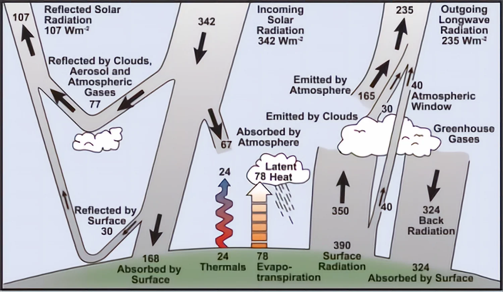
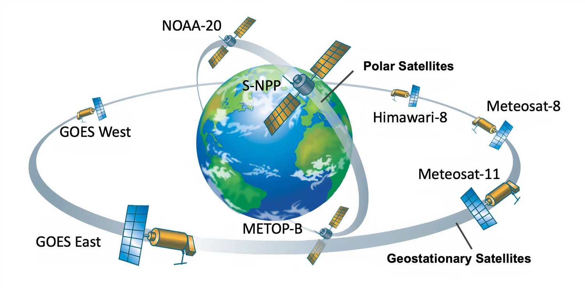
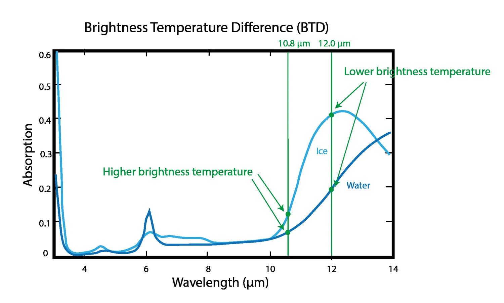
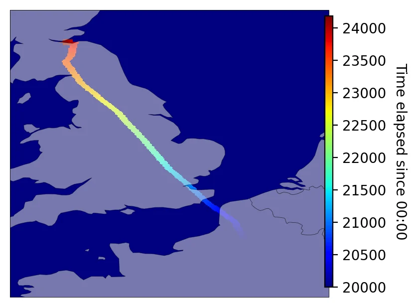
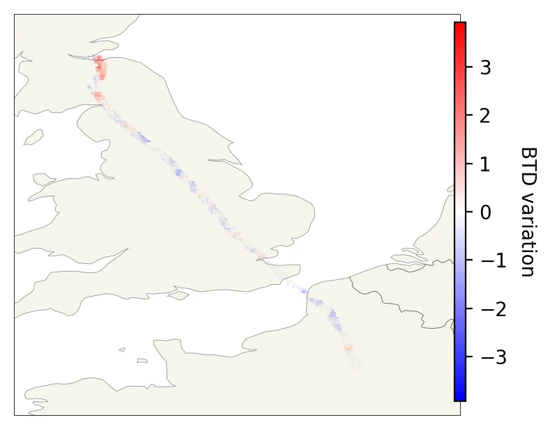
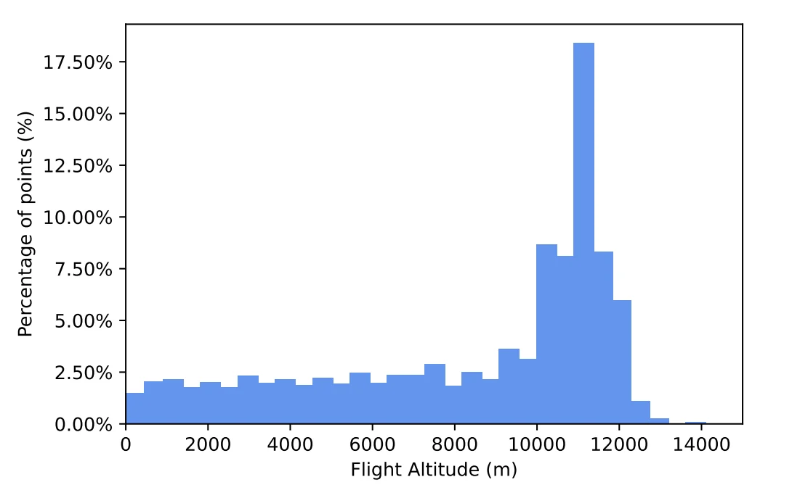
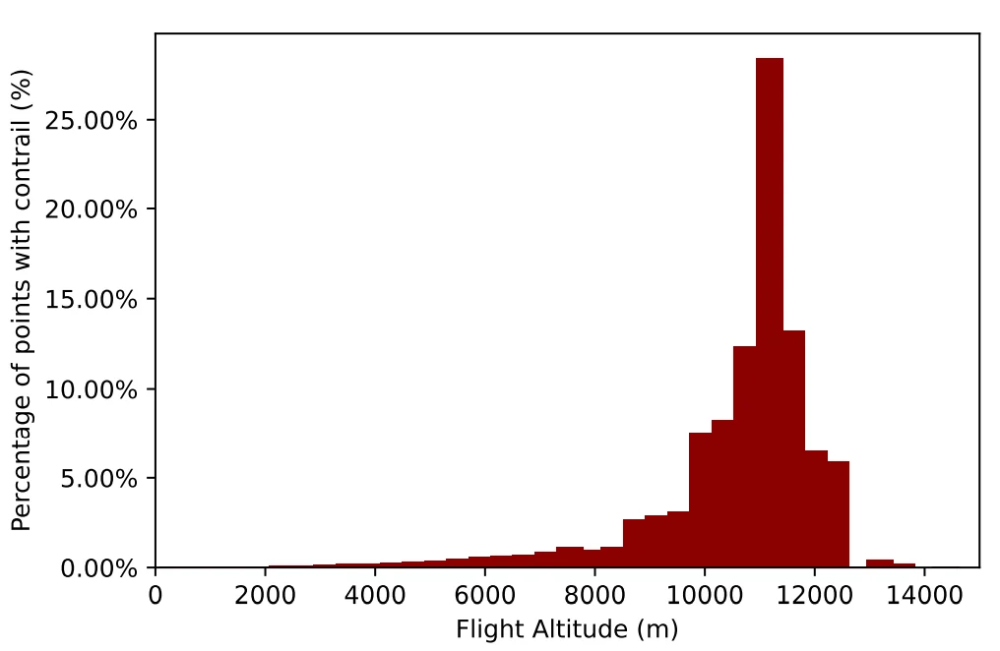
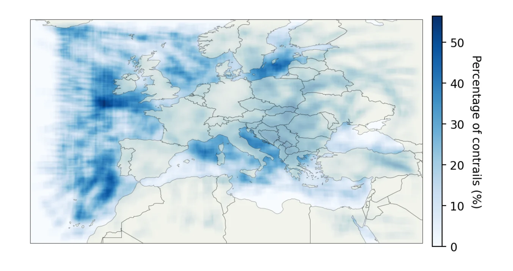
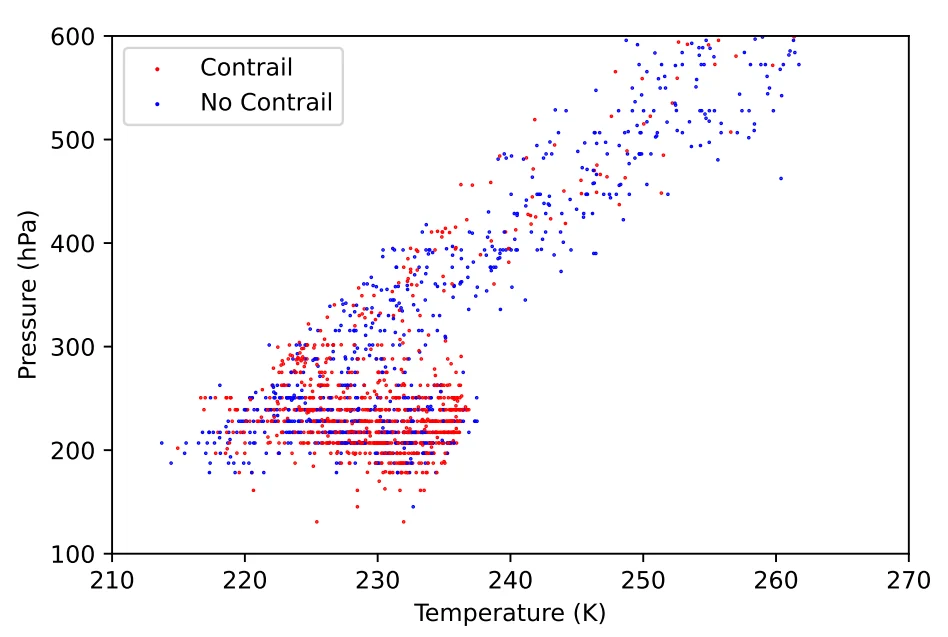
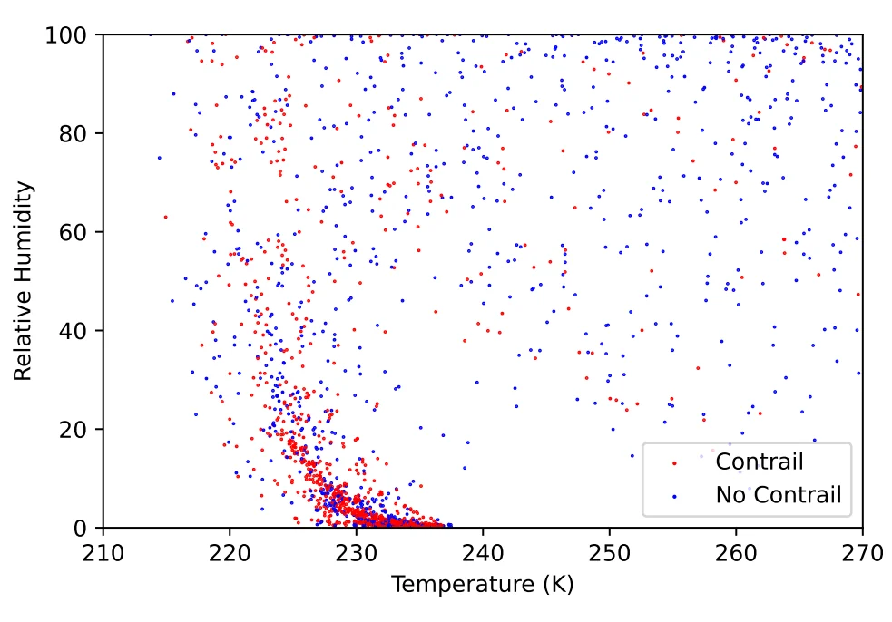

Detectando estelas de condensación sobre Europa desde o espazo
Un avión a 11 km de altitude deixa unha estela branca que pode durar minutos… ou converterse nunha nube de xeo de miles de quilómetros cadrados. Neste proxecto de aula imos entender por que se forma, como a detectan os satélites e que papel xoga no quecemento global. O obxectivo é estudar o que acontece en Europa: onde aparecen as estelas, con que condicións e como evolucionan.
A Terra recibe enerxía do Sol e devólvea ao espazo en forma de radiación infravermella. Nun clima en equilibrio, a enerxía que entra é igual á que sae. Os gases de efecto invernadoiro —vapor de auga, CO₂, metano, ozono— absorben parte desa radiación infravermella e reemítena en todas as direccións, incluída a superficie. Esa «manta» natural mantén o planeta uns 33 °C máis cálido do que sería sen ela.
O problema aparece cando a composición da atmosfera cambia. Ao queimar combustibles fósiles engadimos CO₂ e outros gases que absorben máis radiación; a enerxía que debería escapar queda retida. O planeta entra nun desequilibrio radiativo: absorbe máis do que emite. Ese exceso de enerxía quéntanos os océanos, funde o xeo, eleva o nivel do mar e intensifica fenómenos extremos.
A aviación contribúe a ese desequilibrio de varias formas: emite CO₂ (longa vida), NOₓ (que produce ozono e destrúe metano), vapor de auga e aerosois. Pero hai un efecto adicional, moi visual e moi pouco intuitivo: as estelas de condensación, que poden transformarse en cirros e alterar o balance radiativo durante horas.

Fai clic nunha barra ou usa o selector para ver o detalle. Valores en mW/m², media 2000–2018.
| Termo | ERF | RF | Confianza |
|---|---|---|---|
| Cirros de estela | 57,4 (17–98) | 111,4 (33–189) | Baixa |
| CO₂ | 34,3 (28–40) | 34,3 (31–38) | Alta |
| NOₓ (neto) | 17,5 (0,6–29) | 8,2 (−4,8–16) | Baixa |
| Vapor de auga estratosférico | 2,0 (0,8–3,2) | 2,0 (0,8–3,2) | Media |
| Aerosois de feluxe | 0,94 (0,1–4,0) | 0,94 (0,1–4,0) | Baixa |
| Aerosois de xofre | −7,4 (−19–−2,6) | −7,4 (−19–−2,6) | Baixa |
| Total aviación | 100,9 (55–145) | — | — |
ERF vs. RF: o RF mide o desequilibrio inmediato; o ERF inclúe axustes rápidos, como cambios na cuberta de nubes. Para as estelas, o ERF (57,4) é menor có RF (111,4) porque o ERF inclúe axustes rápidos —por exemplo, cambios na cuberta de nubes— que compensan parte do forzamento inmediato. O ERF é a métrica máis adecuada para comparar con outros sectores.
Unha estela nova é unha liña estreita de xeo. Se o aire que a rodea está saturado respecto do xeo, a estela persiste, esténdese e pode converterse nun cirro artificial. Esa nube extra reflicte parte da luz solar (arrefría) pero tamén atrapa radiación infravermella (quenta).
O balance neto é positivo: quenta. E é especialmente positivo de noite, cando non hai luz solar que reflicta. Por iso non abonda con mirar o CO₂: hai que mirar tamén cando e onde se forma a estela.
Escala ilustrativa. As estelas son un forzamento de vida curta: actúan rápido e desaparecen rápido. Reducilas pode ter un efecto climático relativamente rápido, pero non substitúe a redución do CO₂.
Obxectivo de crecemento neutro en carbono, mellora da eficiencia do 2 % anual e fomento de combustibles alternativos. O foco está no CO₂.
Mide o desempeño do ATM pola distancia do plan de voo. Os factores ambientais como a formación de estelas non se consideran.
Mellorar a eficiencia un 1,5 % anual e reducir as emisións de CO₂ un 50 % en 2050 respecto de 2005. De novo, o CO₂ é o protagonista.
Cando un motor a reacción queima queroseno, o escape sae moi quente (arredor de 600 K) e cargado de vapor de auga, CO₂, NOₓ e partículas de feluxe. Ao mesturarse co aire frío do exterior, o penacho arrefríase moi rápido. Se a mestura alcanza a saturación, o vapor condensa sobre as partículas e, a temperaturas baixas, conxela formando pequenos cristais de xeo. Iso é o que vemos: unha estela de condensación.
Pero que a estela apareza non significa que dure. Hai dous limiares distintos:
As estelas persistentes son as que importan para o clima: poden estenderse, adelgazar e acabar formando cirros que cobren grandes áreas durante horas. As estelas curtas, aínda que visibles, teñen un efecto radiativo moito menor.
O escape quente e húmido mestúrase co aire. Se a temperatura ambiente está por debaixo dun limiar crítico, a liña de mestura entra na rexión de saturación e nacen cristais de xeo.
\(T < T_{crit}(p, RH, \eta)\)Se o aire está seco respecto do xeo, a estela evapora. Se está sobresaturado, os cristais medran, a estela esténdese e pode transformarse nun cirro persistente.
\(RH_{xeo} > 100\ \%\)No eixe vertical represéntase \(\log_{10} S\), onde \(S=e/e_s\) é a razón de saturación. A curva parte do punto ambiente e sobe ao arrefriar o penacho. Se cruza \(S=1\), fórmanse cristais.
A liña de mestura entre o escape e o aire ambiente pódese aproximar por unha recta no plano \((T,e)\), onde \(e\) é a presión parcial de vapor de auga. A súa pendente é:
con \(E_{H_2O}\approx 1{,}23\ \mathrm{kg/kg}\) de combustible, \(p\) a presión, \(c_p\) o calor específico, \(\varepsilon=0{,}622\), \(\eta\) a eficiencia propulsiva e \(Q\approx 43\ \mathrm{MJ/kg}\). A estela fórmaa se a liña de mestura corta a curva de saturación \(e_s(T)\), é dicir, se \(T
O simulador resolve esta condición cun modelo de saturación de Magnus e unha eficiencia \(\eta=0{,}30\). É un modelo didáctico: a microfísica real depende do tamaño das partículas, da turbulencia e da historia do penacho.
Unha estela é un obxecto pequeno, fino e cambiante. Desde a Terra vémola como unha liña branca; desde o espazo, é unha anomalía de brillo nunha imaxe. Para detectala necesitamos un sensor que combine resolución espacial (ver detalles de poucos km), resolución temporal (volver mirar cada poucos minutos) e resolución espectral (distinguir xeo de auga e de superficie).
Os satélites xeoestacionarios, como Meteosat, observan sempre a mesma cara da Terra e repiten a imaxe cada 15 minutos. Os satélites polares, como MODIS ou VIIRS, teñen maior resolución espacial pero pasan só unha ou dúas veces ao día. É un compromiso clásico da observación da Terra: frecuencia contra detalle.
Para este proxecto, a peza clave é SEVIRI (Spinning Enhanced Visible and InfraRed Imager), a bordo da segunda xeración de Meteosat. Traballa en 11 canles espectrais (máis unha canle HRV de alta resolución), cunha resolución de 3 km no nadir e un ciclo de 15 minutos. Iso permítenos seguir a evolución dunha estela entre dúas imaxes consecutivas e estudar o que acontece sobre Europa.
SEVIRI non é unha cámara de vídeo: é un radiómetro cun espello que xira e explora a Terra liña a liña. A medida que o espello varre o disco terrestre, o instrumento rexistra a radiación de cada punto en varias canles. Cando completa o ciclo, xa temos unha imaxe nova.
Ese xiro é o que nos dá a alta frecuencia temporal: 15 minutos entre imaxes. Para unha estela, que cambia en minutos, é unha vantaxe enorme. Pero o movemento do espello tamén impón un límite: non podemos pedirlle a mesma resolución espacial que a un satélite polar.
Animación conceptual. O xiro real do espello e o tempo de cada liña dependen do modo de exploración do instrumento.


SEVIRI mide a radiación que chega en moitas bandas. Dúas delas son especialmente útiles para o xeo: 10,8 µm e 12,0 µm. A diferenza entre as temperaturas de brillo observadas nesas dúas canles defínese como:
Nunha nube de xeo fina, a canle de 12,0 µm «ve» máis frío que a de 10,8 µm porque o xeo absorbe máis nesa lonxitude de onda. Por iso, cando hai unha estela ou un cirro fino, BTD < 0. Nunha nube de auga, o comportamento é distinto e a BTD pode ser positiva ou próxima a cero. Esta é a base física da detección: non buscamos «branco» na imaxe visible, senón unha asinatura espectral.
Move a opacidade e cambia o tipo de nube para ver como se comporta a BTD.
| Nº | Canle | Banda | Lonxitude de onda | Uso principal |
|---|---|---|---|---|
| 1 | VIS 0,6 | Visible | 0,6 µm | Nubes, superficie, aerosois |
| 2 | VIS 0,8 | Visible | 0,8 µm | Vexetación, nubes |
| 3 | NIR 1,6 | Infravermello próximo | 1,6 µm | Nubes, neve, superficie |
| 4 | IR 3,9 | Infravermello medio | 3,9 µm | Nubes nocturnas, incendios |
| 5 | WV 6,2 | Infravermello medio | 6,2 µm | Vapor de auga atmosférico |
| 6 | WV 7,3 | Infravermello medio | 7,3 µm | Vapor de auga atmosférico |
| 7 | IR 8,7 | Infravermello térmico | 8,7 µm | Nubes de xeo, aerosois |
| 8 | IR 9,7 | Infravermello térmico | 9,7 µm | Ozono |
| 9 | IR 10,8 | Infravermello térmico | 10,8 µm | Nubes, estelas, temperatura de brillo |
| 10 | IR 12,0 | Infravermello térmico | 12,0 µm | Nubes de xeo, BTD |
| 11 | IR 13,4 | Infravermello térmico | 13,4 µm | Nubes altas, CO₂ |
Unha imaxe de satélite é unha proxección bidimensional. A BTD dinos que hai xeo, pero non a que altitude está. E sen altitude non podemos saber que condicións atmosféricas rodean a estela: a temperatura e a humidade a 8 km non son as mesmas que a 11 km. Para asociar cada estela co voo que a produciu necesitamos datos de tráfico aéreo (posición e hora), características da aeronave e produtos meteorolóxicos que nos dean o perfil atmosférico nese punto e nese instante.
Esta é a razón pola que o proxecto non se queda na imaxe: reúne satélite, voo e atmosfera para comparar casos e discutir se o candidato é coherente. Ese é o paso que permite pasar da imaxe ao mapa.
Imaxe espectral cada 15 min, 3 km. Detecta a sinatura de xeo.
Posición, altitude e hora de cada avión.
Temperatura e humidade no punto e na hora do voo.
MTOW, número e tipo de motores, categoría de estela.
Cada fonte achega unha dimensión distinta. A combinación das catro é o que permite interpretar o caso.
O vídeo seguinte mostra a evolución da BTD sobre as Illas Canarias entre as 16:24 e as 19:09. É un caso local, moi útil para aprender a mirar: as zonas azuis escuras indican valores negativos, asociados a nubes de xeo finas. Ao avanzar o tempo, aparecen, medran e desprazan bandas que poden corresponder a estelas ou a cirros naturais.
O obxectivo do proxecto é estudar o que acontece en Europa; este vídeo emprégase como exemplo detallado para entender o tipo de sinal que buscamos e como cambia co tempo.
Ademais do caso das Canarias, o proxecto utiliza outros dous exemplos para traballar dúas ideas distintas. Non forman unha secuencia temporal: son casos independentes que se presentan despois do vídeo.


| Fonte | Tipo | Resolución / cobertura | Vantaxe | Limitación |
|---|---|---|---|---|
| SEVIRI (Meteosat) | Satélite xeoestacionario | 15 min · 3 km · 11 canles | Alta frecuencia; ideal para evolución | Resolución espacial limitada; só un hemisferio |
| MODIS / VIIRS | Satélite polar | 1 km / 750 m · diaria | Maior detalle espacial | Poucas pasadas ao día; non segue a evolución |
| EarthCARE | Satélite polar · lidar + radar | Perfís verticais · 2024– | Perfil de nubes e aerosois | Non operativo para seguimento continuo |
| IAGOS | In situ · avión comercial | Puntos dispersos | Moitas variables, alta precisión | Baixa densidade espacial |
| AMDAR | In situ · avión comercial | Alta densidade | Moitos puntos, acceso libre | Poucas medidas de humidade |
| DDR (Eurocontrol) | Tráfico aéreo | Traxectorias de voo | Posición, hora e código ICAO | Depende da cobertura e da calidade do dato |
| GFS (NOAA) | Modelo numérico | 0,5° · 31 niveis · 3 h | Temperatura, humidade, vento, xeopotencial | Resolución de ≈ 50 km; incerteza na humidade |
Non fai falta complicar o proxecto: a idea é sinxela: observar unha zona de Europa, comparar o que cambia co paso dos avións, cruzar esa información con datos de voo e de atmósfera, e interpretar o resultado nun mapa. Catro pasos, catro preguntas.
O obxectivo non é demostrar un algoritmo perfecto, senón aprender a ler unha imaxe de satélite, a formular hipóteses e a xustificar conclusións con datos. As ferramentas poden ser máis ou menos sofisticadas; o importante é o razoamento.
Escóllese unha rexión de Europa e un período curto de estudo. Para cada imaxe de SEVIRI constrúese a diferenza de temperatura de brillo entre as canles de 12,0 µm e 10,8 µm. O resultado é un mapa de BTD: as zonas negativas indican xeo fino na atmosfera.
Unha única imaxe pode ter cirros naturais. Para buscar unha estela, compárase a BTD no momento t coa BTD un pouco despois, cando o avión xa pasou. Se a BTD diminúe, hai máis absorción de xeo e o píxel é un bo candidato.
Non é necesario fixar un algoritmo exacto para a aula: abonda con entender que buscamos un cambio coherente no tempo, non unha cor illada nunha imaxe.
Unha mancha de xeo non di que avión a produciu. Para iso crúzase a imaxe coa traxectoria do voo (posición, altitude e hora) e coas condicións atmosféricas nese punto: temperatura, humidade e altitude. Así se pode comprobar se o candidato é coherente co paso dun avión.
Cada fonte achega unha dimensión distinta. O valor didáctico está en xuntalas e discutir as incompatibilidades.
O resultado final é un mapa no que se pode ver onde aparecen as estelas e con que condicións. A partir de aí xorden as preguntas: concentranse nos corredores de tráfico? Aparecen a máis altitude? Que pasa cando a humidade é baixa? O mapa non é a resposta final: é o punto de partida da discusión.
| Voo | Hora | Altitude | T (°C) | RH (%) | Estela |
|---|---|---|---|---|---|
| Voo A | 16:30 | 11 000 m | −55 °C | 70 % | Si |
| Voo B | 16:30 | 9 500 m | −42 °C | 15 % | Non |
| Voo C | 17:00 | 11 200 m | −58 °C | 45 % | Si |
A táboa serve para discutir que variables importan. Non é unha base de datos operativa.
Os resultados non son unha climatoloxía: son unha mostra de aula sobre cinco días. Pero abondan para ver patróns e para formular boas preguntas: a que altitude aparecen as estelas, onde se concentran en Europa e que condicións atmosféricas as favorecen.
As figuras e o vídeo conservan as etiquetas orixinais en inglés.





Europa é unha das rexións con máis tráfico aéreo do mundo. Se podemos identificar onde se forman estelas persistentes, podemos discutir estratexias de mitigación con datos: pequenos cambios de altitude ou de ruta poden reducir unha parte do forzamento, pero tamén consomen máis combustible e poden aumentar o CO₂. Non hai solucións máxicas: hai compromisos que hai que argumentar.
Este proxecto naceu como un traballo de aula e ten unha segunda vida moi interesante: converterse nunha secuencia didáctica para a materia de Sistemas de Observación Espaciais. A idea é sinxela: usar un problema real —detectar estelas desde o espazo— para ensinar física atmosférica, teledetección, análise de datos e comunicación científica. Non se trata de «ver unha presentación», senón de tomar decisións con datos.
A proposta encaixa coa aprendizaxe baseada en proxectos (ABP) e coa aula invertida: o alumnado explora os simuladores e as figuras antes da sesión, e o tempo de clase dedícase a discutir, calcular e argumentar. O sitio web funciona como recurso aberto e como caderno de campo interactivo.
O alumnado traballa con imaxes de SEVIRI, traxectorias de Eurocontrol e produtos do GFS. A complexidade do dato real —ruído, ocos, incerteza— é parte da aprendizaxe.
Os simuladores de formación e de BTD permiten manipular variables e ver consecuencias. A visualización convértese nunha ferramenta de pensamento, non nun adorno.
O mesmo caso conecta termodinámica, radiación, meteoroloxía, teledetección, programación e argumentación. É unha excelente ponte entre materias.
O quiz dá retroalimentación ao instante; o informe e o pitch avalíanse con rúbrica. A avaliación formativa non é un extra: está integrada na secuencia.
| Sesión | Contidos | Actividade clave | Evidencia |
|---|---|---|---|
| 1 · O reto 2 h |
Quecemento global, efecto invernadoiro, forzamento radiativo, papel da aviación. | Analizar o gráfico ERF e discutir: «que termo quenta máis? por que?». Quiz de ideas previas. | Mapa de argumentos + respostas do quiz. |
| 2 · A física 2 h |
Mestura, saturación, Schmidt–Appleman, persistencia, tipos de estela. | Predicir con lápiz e papel e comprobar co simulador. Deseñar un experimento virtual. | Ficha de hipóteses + captura de escenarios. |
| 3 · A observación 2 h |
Satélites xeoestacionarios e polares, SEVIRI, canles, BTD, split-window. | Identificar unha estela nunha imaxe e xustificar a elección das canles. Comparar BTD de xeo e auga. | Informe curto de detección. |
| 4 · Os datos 3 h |
Satélite, voo e atmosfera; comparación temporal; lectura de mapas. | Reproducir o pipeline cun subconxunto de datos ou cun caderno guiado en Python. | Caderno de prácticas + táboa de resultados. |
| 5 · A comunicación 2 h |
Interpretación, incerteza, límites do modelo, comunicación científica. | Pitch de 3 minutos cunha figura e unha conclusión. Coevaluación con rúbrica. | Pitch + rúbrica + reflexión final. |
A secuencia pode adaptarse a materias de Meteoroloxía, Teledetección, Enxeñería Ambiental ou Ciencias do Mar, cambiando o caso de estudo e mantendo a lóxica «observar → modelar → decidir».
| Criterio | Peso | Excelente | Adecuado | A mellorar |
|---|---|---|---|---|
| Rigor físico | 25 % | Explica formación, persistencia e BTD con precisión e matices. | Describe os conceptos correctamente, con algunha imprecisión. | Confunde causas e consecuencias ou omite condicións. |
| Análise de datos | 30 % | Interpreta figuras, incerteza e limitacións; xustifica decisións. | Le as figuras e obtén conclusións básicas correctas. | Describe a figura sen interpretala ou ignora a incerteza. |
| Comunicación | 25 % | Pitch claro, visual e adaptado ao público; responde con solidez. | Mensaxe comprensible, con apoio visual suficiente. | Mensaxe confusa, exceso de texto ou falta de fío condutor. |
| Traballo en equipo | 20 % | Roles claros, cooperación e responsabilidade compartida. | Participación equilibrada con algunha coordinación mellorable. | Traballo individual ou reparto desigual. |
«Como avaliar unha competencia que combina física, datos e comunicación cando o resultado non é un número, senón unha decisión xustificada?»
Esta pregunta conecta a innovación docente coa avaliación auténtica: non basta con corrixir un cálculo; hai que valorar a calidade do razoamento, a xestión da incerteza e a capacidade de explicar o que non se ve.
Seis preguntas para repasar as ideas clave. Cada resposta dá retroalimentación inmediata: non se trata de acertar por acerto, senón de entender por que.
Nube de xeo que se forma tralo paso dun avión cando o vapor de auga do escape condensa e conxela ao mesturarse co aire frío. Pode ser curta (minutos) ou persistente (horas).
Estela persistente que se estendeu e adelgazou ata parecerse a un cirro natural. É o termo que domina o forzamento radiativo da aviación nos estudos recentes.
O RF é o cambio instantáneo no balance de radiación da Terra. O ERF inclúe axustes rápidos do sistema climático (por exemplo, cambios na cuberta de nubes). O ERF é máis adecuado para comparar o impacto de distintos sectores.
Diferenza entre as temperaturas de brillo medidas en dúas canles infravermellas. Neste proxecto: \(BTD = BT_{12,0} - BT_{10,8}\). Valores negativos indican xeo fino na columna.
Técnica que usa dúas canles próximas no infravermello térmico (10,8 e 12,0 µm) para separar nubes de xeo, vapor de auga e superficie. A diferenza de absorción entre as canles é a «sinatura» que buscamos.
Criterio termodinámico que indica se o penacho dun avión alcanza a saturación ao mesturarse co aire ambiente. Depende da presión, da temperatura, da humidade e da eficiencia do motor.
Estado no que a presión parcial de vapor de auga é maior ca a de saturación respecto do xeo. É a condición que permite que unha estela persista e medre en lugar de sublimar.
Estratexia para distinguir unha estela dun cirro natural: compárase a BTD no momento do paso do avión coa BTD un pouco despois. Buscamos un cambio coherente no tempo, non unha cor illada.
A traxectoria indica a posición, a altitude e a hora de cada avión. O modelo meteorolóxico fornece a temperatura e a humidade neses puntos e instantes. Cruzar ambos é o que permite comprobar se o candidato é coherente.
Sensor a bordo dos satélites Meteosat de segunda xeración. Proporciona imaxes cada 15 minutos en 11 canles (máis HRV) cunha resolución de 3 km no nadir. É a fonte principal deste estudo.
Conxunto pequeno de casos que se usa para aprender e discutir, non para facer unha climatoloxía. Este proxecto traballa con cinco días de xuño de 2018 sobre Europa.
As figuras 1–11 proveñen da presentación orixinal do traballo e das fontes citadas; úsanse con fins educativos. As ligazóns abren en nova pestana.